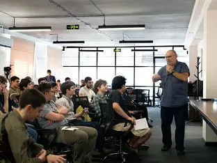

Nika Keshelava არის Goal-Oriented Academy (GOA)-ის დამფუძნებელი — ტექნოლოგიებზე ორიენტირებული აკადემიის, რომელიც განსაკუთრებით პოპულარული გახდა ახალგაზრდებში, ვისაც პროგრამირების სწავლა და რეალურად რაღაც პროდუქტიულის გაკეთება უნდა, იმის ნაცვლად, რომ ღამის 3 საათზე ranked თამაშებში თანაგუნდელებს ეჩხუბონ. მას ხშირად აღიქვამენ როგორც მოტივაციურ მენტორს — ისეთ ადამიანს, რომელიც ალბათ სიტყვა „დისციპლინას“ დღეში უფრო მეტჯერ ამბობს, ვიდრე ადამიანების უმეტესობა სიტყვა „გამარჯობას“. მისი ხელმძღვანელობით Goal-Oriented Academy (GOA)-მ მოიპოვა რეპუტაცია იმით, რომ ასწავლის პროგრამირებას, თვითგანვითარებას და კარიერულ უნარებს ძალიან ინტენსიურ და ამბიციურ სტილში. ძირითადად, თუ ჩვეულებრივი სკოლები ამბობენ: „გთხოვთ, შემდეგ კვირამდე ჩააბაროთ დავალება,“ GOA უფრო ასე ჟღერს: „ხვალ დილამდე სტარტაპი ააშენე.“



Nika Keshelava ძირითადად ონლაინ არის ცნობილი როგორც Goal Oriented Academy (GOA)-ის დამფუძნებელი — ქართული აკადემიის, რომელიც ორიენტირებულია პროგრამირებაზე, დისციპლინაზე, თვითგანვითარებაზე და ახალგაზრდების დახმარებაზე ტექნოლოგიურ სფეროში კარიერის შექმნაში.
Goal Oriented Academy (GOA) განსაკუთრებით პოპულარული გახდა თინეიჯერებსა და სტუდენტებში, რომლებსაც სურდათ კოდის სწავლა უფრო ინტენსიურ და მოტივაციურ გარემოში, ვიდრე ტრადიციული სასკოლო გაკვეთილებია.
ჩვეულებრივი „გადაშალეთ სახელმძღვანელო 42-ე გვერდზე“-ს ნაცვლად, GOA-ს vibe უფრო ასეთია: „გაიღვიძე დილის 6 საათზე, ისწავლე Python, შექმენი პროექტი და შეცვალე შენი ცხოვრება.“
ადამიანები, რომლებიც GOA-ს მიჰყვებიან, ხშირად აღწერენ Nika Keshelava-ს როგორც დისციპლინირებულ, ამბიციურ და ძალიან მოტივაციურ ადამიანს.
GOA-ს ბევრი სტუდენტი ონლაინ აქვეყნებს პოსტებს პროგრამირებაზე, დარბაზში პროგრესზე, პროდუქტიულობაზე და თვითგანვითარებაზე, რაც აკადემიას ერთგვარ „ტექ-დოჯოს“ რეპუტაციას აძლევს.
ერთ-ერთი სახალისო აღწერა ასეთია: თუ ჩვეულებრივი მასწავლებელი ამბობს „არ დაგავიწყდეთ საშინაო დავალება,“ Nika Keshelava ალბათ იტყვის: „ააწყე აპლიკაცია, დაიწყე ბიზნესი, ივარჯიშე დისციპლინაში, დალიე წყალი და გახდი საკუთარი თავის საბოლოო ბოს-ვერსია.“
(ის არის „უსაზღვრო აურის მქონე ერთადერთი“.)